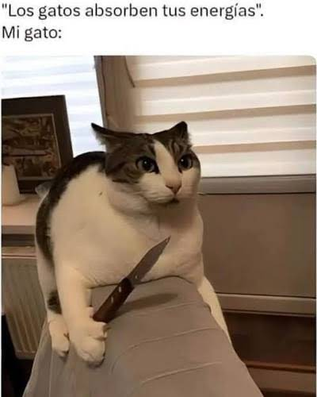
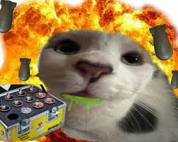
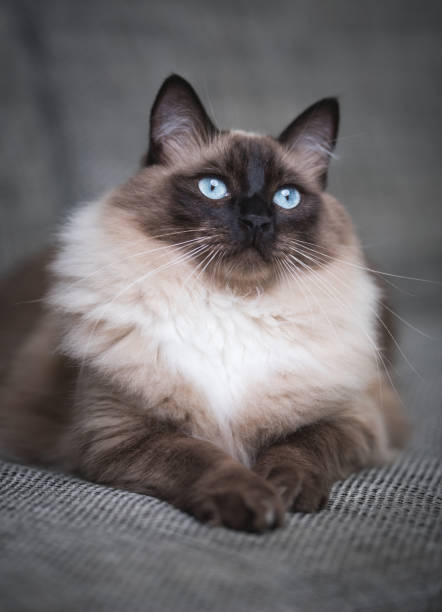
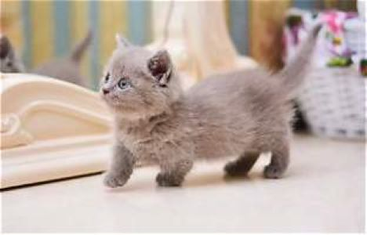
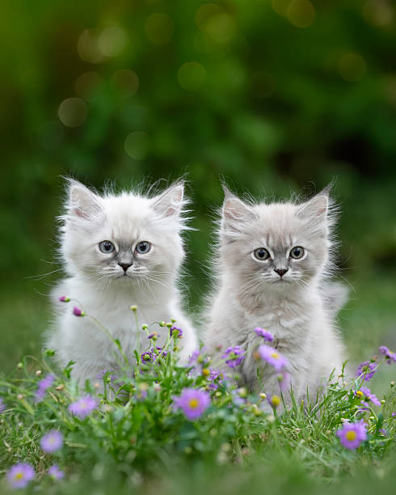
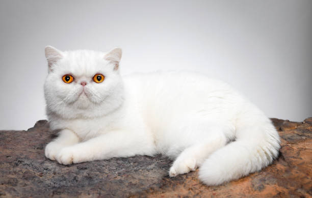
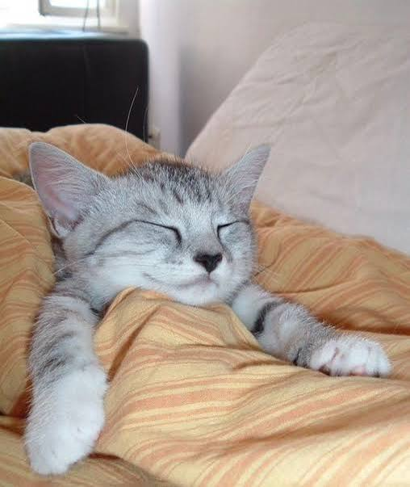

Los gatos son mamiferos los cuales tienen cuatro patas, una cola,dos orejas y lo demas que tienenlos mamiferos como nariz, ojos, boca,etc.

Los gatos son carnivoros los cuales comen carne y en la escala alimentica son carnivoros de la primera clase comiendo insectos u otros animales puequeños

Es un gato que en las partes que tengan mas calor sean blancas y en las mas frias sean negras. Cuando nacen suelen ser totalmente blancos por estar en un lugar calido y con el tiempo se crea su color negro El maullido de estos gatos suele ser ronco y disonante lo cual la mayoria de sus dueños lo perciben tierno.
.jpeg)
Es de los gatos mas populares por su cara aplastada que los hace ver interesantes y por su pelo largo. Algunos dueños los describen su pelaje como nube por lo largo y esponjoso que es. Es la raza mas popular mundialmente tanto por su apariencia y sus origenes que son aproximadamente de 300 años.

Es de las razas mas bonitas y tiernas que existen las favoritas de la abuela. Al cargarlos en tus brazos ellos se desparraman y se hacen blanditos de hay viene el nombre ragdoll que es muñeco de trapo. El color de sus ojos suelen ser de color azul por la melanina que ellos prodeucen cuando estan creciendo

Para aquel que no conose esta raza es de las mas pequeñas llegando a medir 21 centimetros y pesar 2 kilogramos. La razon de que esta raza sea de las mas bonitas es por sus patas cortas que los hace ver en la clasica posicion de pan que tienen los gatos.

Es un gato particular por su pelaje elegante de colores oscuros azulados y sus ojos verdes que genera una mirada penetrante. Es un gato muy reservado y tranquilo por lo que es el favorito para las personas tranquilas

Estos gatos se caracterizan por su cuerpo grande y su pelaje de colores crema adaptados a las condiciones climaticas del sur de siberia la region que les da su nombre a estos gatos. En invierno poseen un pelaje mas denso a diferencia del verano que es mas ligero.

Los bengala son de los gatos con mas energia del mundo lo cual los hace muy hiperactivos. Su pelaje suele asimilarse a un tigre con las lineas negras y el pelaje naranja , sus ojos son muy verdes debido a la melanina que producen al crecer

El gato exotico es un gato popular por sus rasgos faciales que muestran un sentido infantil, es de los gatos mas adaptables del mundo lo cual hace que mudarse sea facil. Es de los gatos mas faciles de peinar y cepillar por la suavidad de su pelaje.

Es un gato nacido en escocia. Tiene una forma particular por las orejas que las tienen plegadas hacia adelante que son una mutacion genetica que ellos tienen en su epecie.

Este gato es una nueva especie que los cientificos descubrieron en el 2026. Este es un gato que se encontro en boliva, sus color es anaranjado con manchas negras y se suele semejar a una combinacion entre un gato y un tigre. Fue encontrado en los bosques nublados de los yungas en la paz y esta amenazado por la deforestacion y la perdida de habitad en las zonas que las empresas utilizan en boliva
.jpg)
¡Pulsa un botón para descubrir algo nuevo!
